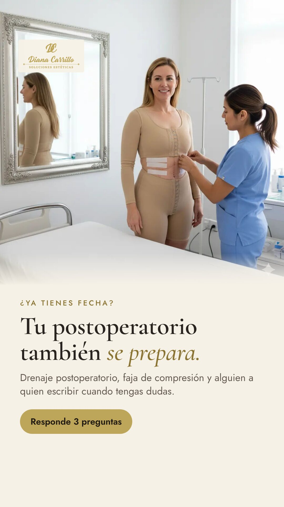
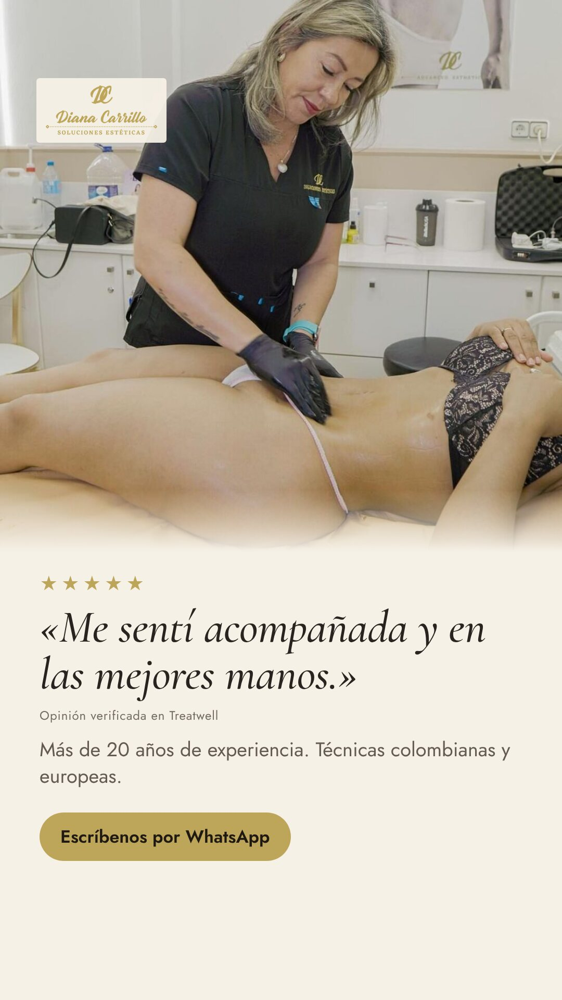
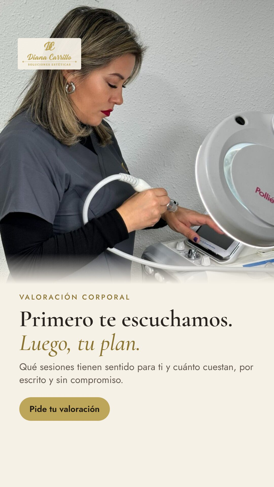

Tres mensajes para saber cuál trae valoraciones y bonos, no solo mensajes
Cada mensaje tiene un estático para el feed (4:5) y una story (9:16), con tus fotos reales de dianacarrillo.es. Sin precios, sin antes y después y sin promesas de resultado. A y C llevan al test de la landing; B abre WhatsApp directamente.
Para quien ya tiene fecha de cirugía. Pregunta: ¿el «prepáralo antes» trae pacientes con más prisa y más bonos?
Tu cara y una opinión real de Treatwell. Pregunta: ¿en postoperatorio pesa más la persona que el servicio?
Scultor, lifting de glúteos, masaje moldeador. Pregunta: ¿llena huecos de agenda a buen coste por valoración?
A · Postoperatorio: «prepáralo antes de entrar a quirófano»
La paciente que se opera en unas semanas está buscando ahora quién le hará el postoperatorio. Quien le conteste primero y le dé un plan, se la queda.


B · Confianza: tu cara y una opinión real
En postoperatorio se elige a una persona. La opinión es pública y verificada en tu ficha de Treatwell; la usamos sin el nombre de la paciente.


C · Corporal sin cirugía: primero te escuchamos, luego tu plan
Para quien no se va a operar. Hablamos de valoración y plan, no de centímetros ni de resultados.


Cómo lo probamos
| Qué | Cómo |
|---|---|
| Presupuesto | Unos 30 € al día en total (≈ 900 €/mes), dentro de lo que ya inviertes: 12 € A, 10 € B y 8 € C. Si prefieres empezar con 500 €/mes, arrancamos con A y B y C entra en la semana 3. |
| Estructura | Una campaña por mensaje, cada una con su feed y su story. A y C con el mismo test y la misma landing; B a WhatsApp. Solo cambia el mensaje, para comparar de verdad. |
| Primeros 7 días | No se apaga nada antes de 7 días y unas 2.000 impresiones por anuncio. Miramos qué mensaje para el scroll y cuál pasa del clic al test. |
| Qué gana | No el mensaje más barato, sino el coste por valoración hecha y, a partir de la semana 3, los bonos vendidos. Un anuncio más caro por mensaje puede ganar si trae pacientes con fecha de cirugía. |
| Cuándo se corta | Si a los 7 días un anuncio ha gastado el doble de lo que cuesta una valoración en los otros y no ha traído ninguna, se apaga y su dinero pasa al que va mejor. |
| Después | El mensaje que gane se queda y se le hacen 3 ganchos nuevos sobre la misma idea (por ejemplo, un vídeo de 20 s de Diana explicando cómo prepara un postoperatorio). El que pierda se sustituye. |
Pendiente antes de publicar
- Tu visto bueno a cada texto y a cada foto. La story A usa una imagen de tu web generada con IA: mejor una foto real de una prueba de faja (con permiso).
- Permiso para usar la opinión de Treatwell (sin nombre) y, si quieres, opiniones de Google.
- Carboxiterapia y mesoterapia corporal no aparecen en los anuncios: en España son actos médicos y antes hay que confirmar quién las realiza y cómo se pueden anunciar.
- Nada de antes y después, cicatrices ni cuerpos en ropa interior en primer plano: Meta los limita en salud y bajan la confianza.
- Tus 2 vídeos activos (IDs 951189051398191, desde el 13-oct, y 2590059078105877, desde el 12-oct) llevan a tu perfil de Instagram. Propuesta: mantener vuestro ángulo de postoperatorio, que es bueno, pero llevarlo a la landing con el test (fecha de cirugía) o a un formulario instantáneo en vez de al perfil, y medirlos junto a A, B y C.